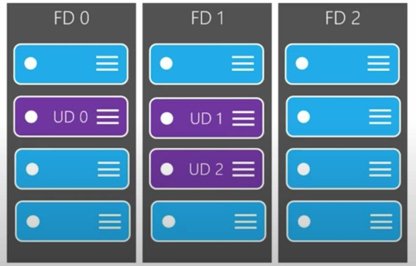

Hierarchies
Azure Geography → Azure Regions → Azure Availability Zones → Availability Sets
(Azure Geography examples: United States, Canada, Azure Government (US), etc)
Paired Region: Each region is paired with another region 300 miles++ for DR purposes
Specialized Region: Specialized / secret regions to meet compliance or legal reasons (US DoD Central, US Gov Virginia, US Gov Iowa, China East, China North, etc)
Region generally contains 3 AZs
Fault Domain / Update Domain: An Availability Set is a combination of a fault domain and an update domain. A Fault Domain is a logical grouping of hardware to avoid a single point of failure within an AZ + share a common power source and network switch. Update domain used to ensure than updates to underlying hardware and software is done in sets i.e. if your apps runs across 2 update domains then both will not be taken down at the same time for hardware/software upgrades or patches.
Availability Set: Logical grouping of VMs can be defined indicating the number of Fault Domains and Update Domains your VMs will need to be spread across. think horizontal and vertical slices

- SLA with Availability Sets: 99.95% SLA with Availability Zones: 99.99%
- Account Hierarchies: Account → Management Group → Subscriptions → Resource Groups → Resources
- Azure Subscriptions: Aggregation mainly for separated billing (i.e. by teams / by department / by products, etc) – also serves as a means to apply permissions across the board
- Free
- Pay As You Go
- Developer Support
- Professional Direct Support
- Standard Support
- Enterprise
- Student
- Azure Resource Groups (collection based on env, department, clients, etc) – permissions can be assigned at a resource group level, resources can be deleted in one shot, group based on env? module? etc